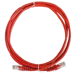
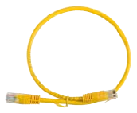

Patch cords category 5e and category 6, UtP and FTP
- Designed for cross connections at distribution points as well as connections of terminals
with user outlet.
- Compatible with category 5e, sequence 568B.
- FTP cables are resistant from mechanical damages, providing continuity of shielding.
- Five standard length options: 0.5m, 1m, 2m, 3m, 5m.
- Equipped with special type RJ45 plugs fixed on the cable by means of moulding
technology.

Available Types of Patch Cords:
- UTP cat. 5e and cat. 6 patch cords are available in the following colours: grey, ivory, black,
red, green, blue, yellow, orange, brown, purple and pink
- FTP cat. 5e and cat. 6 patch cords available in the following colours: grey, ivory, black, red,
green, blue, yellow
- SSTO cat. 6 patch cords available in the following colours: grey, ivory, black, red, green,
blue, yellow
We also offer Cross Over, 6A SSTP PiMF patch cords.
